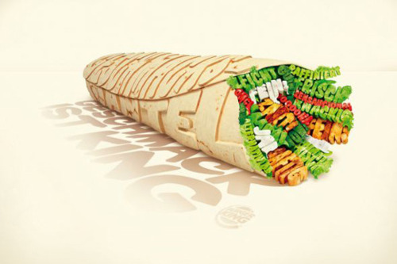

Fri, 26 Nov 2010 12:52:44 · design · typhography · advertisement · ad · creative
Pix that speak up!

Some cool collection of print ads visualized using creative typography approach. See full gallery here.
Fri, 26 Nov 2010 12:52:44 · design · typhography · advertisement · ad · creative

Some cool collection of print ads visualized using creative typography approach. See full gallery here.